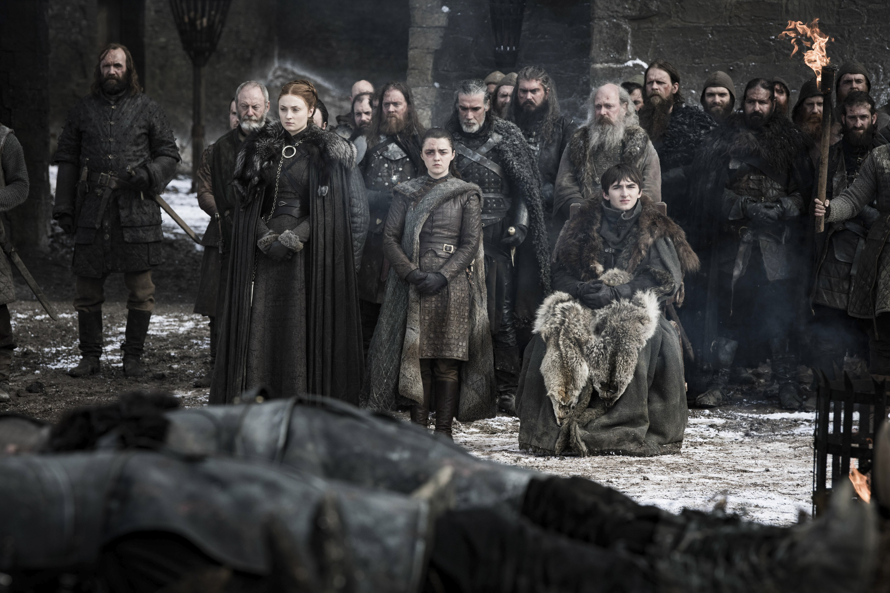

Game of Thrones
Игра престолов

Главная страница
В начало
Начало
Здравствуйте, гости нашего сайта!
«Игра престолов» — американский фэнтезийный драматический телесериал, созданный Дэвидом Бениоффом и Д. Б. Уайссом для кабельного телеканала HBO. Основан на цикле романов «Песнь льда и огня» Джорджа Р. Р. Мартина.
Съёмки велись в нескольких странах, включая Великобританию (Северная Ирландия), Мальту, Хорватию, Исландию и Марокко. Премьера первого сезона в США состоялась 17 апреля 2011 года, последняя серия финального сезона демонстрировалась 19 мая 2019 года.
Действие «Игры престолов» происходит в вымышленном мире, напоминающем средневековую Европу. В сериале одновременно действует множество персонажей и развивается несколько сюжетных линий. Основных сюжетных арок три: первая посвящена борьбе нескольких влиятельных домов за Железный Трон Семи Королевств либо за независимость от него; вторая — потомку свергнутой династии правителей, принцессе-изгнаннице, планирующей вернуть престол; третья — древнему братству, охраняющему государство от угроз с севера.
В сериале поднимаются вопросы насилия и гражданской войны, положения женщин в обществе, роли армии, церкви и семьи в системе социальных отношений. Для сериала характерно отсутствие однозначно положительных персонажей, многие герои совершают спорные поступки и могут погибнуть на экране неожиданно для зрителя. В сериале присутствуют фантастические существа — драконы и нежить. Специально для сериала были профессионально разработаны искусственные языки: дотракийский, высокий валирийский и несколько его диалектов.
Телесериал получил высокие отзывы зрительской аудитории, став одним из самых крупнобюджетных проектов на современном американском телевидении и самым дорогостоящим в жанре фэнтези, несмотря на то, что многие критики посчитали избыточным количество ненормативной лексики, натуралистических сцен убийств, эротических сцен и намёков сексуального характера. Вокруг «Игры престолов» возникло обширное фан-сообщество. Сериал удостоен многих престижных наград, в том числе 38 прайм-таймовых премий «Эмми» в различных номинациях, трижды премии «Хьюго» за лучшую постановку, премии Пибоди. Питер Динклэйдж, исполнивший роль Тириона Ланнистера, четырежды удостоен премии «Эмми» за лучшую мужскую роль второго плана и премии «Золотой глобус» за лучшую мужскую роль второго плана.
Телесериал получил высокие отзывы зрительской аудитории, став одним из самых крупнобюджетных проектов на современном американском телевидении и самым дорогостоящим в жанре фэнтези, несмотря на то, что многие критики посчитали избыточным количество ненормативной лексики, натуралистических сцен убийств, эротических сцен и намёков сексуального характера. Вокруг «Игры престолов» возникло обширное фан-сообщество. Сериал удостоен многих престижных наград, в том числе 38 прайм-таймовых премий «Эмми» в различных номинациях, трижды премии «Хьюго» за лучшую постановку, премии Пибоди. Питер Динклэйдж, исполнивший роль Тириона Ланнистера, четырежды удостоен премии «Эмми» за лучшую мужскую роль второго плана и премии «Золотой глобус» за лучшую мужскую роль второго плана.
Многие издания, в том числе Buzzfeed, Screen Rant и «Мир фантастики», объявили «Игру престолов» главным сериалом 2010-х. Сериал стал важной частью медиафраншизы, основанной на произведениях Мартина. Независимый приквел, «Дом Дракона», вышел в августе 2022 года.
к началу страницы
Сделал Феликс Ольховский, feolkhovskiy_1@edu.hse.ru